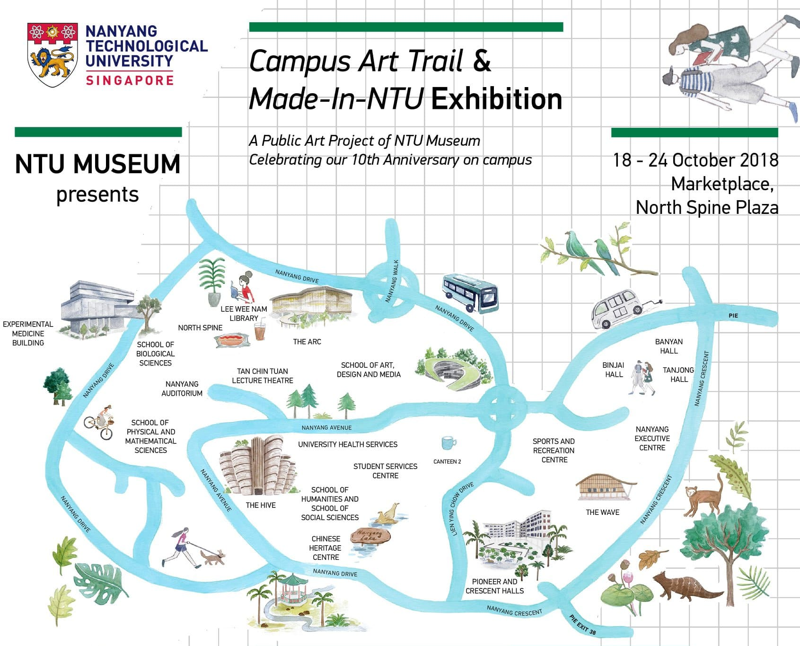
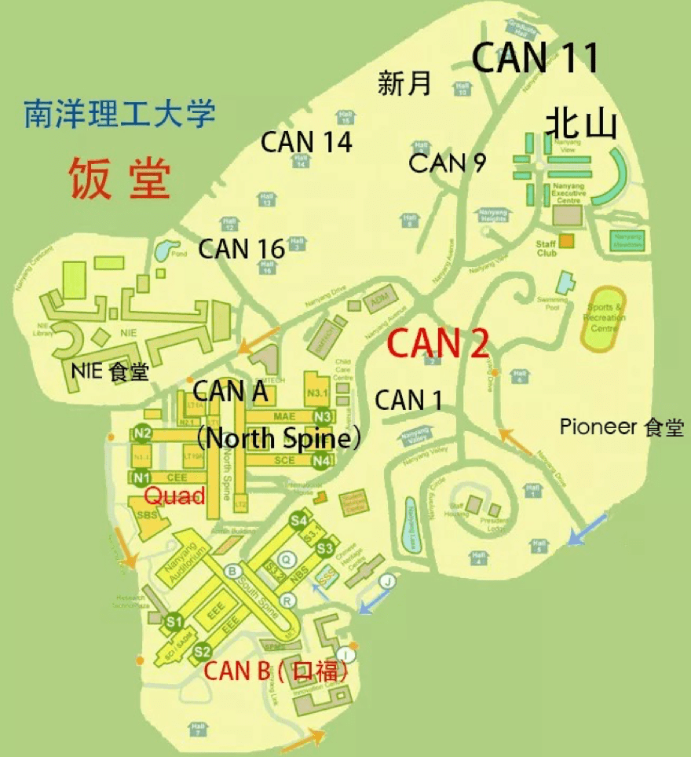

留新校园生活 (NTU)
文章目录
NTU 校区
NTU校区大致是个平行西边形，东面是住宅区，教学区在西面。National Institute Education在西北角，NTU主要教学区则在西和西南，分别为North Spine和South Spine。两个Spine的中间是Nanyang Auditorium和Administration Building。每个Spine有4个block，block之间或周围也有一些教学楼。School of Physical and Mathematical Sciences在学校西南角，South Spine南面；School of Art，Design and Media在校区中间；Student Service Centre在Block 3 & 4东面，是学校的最高点。
NTU Campus Map:
- NTU MAP PDF
- NTU Campus Map
- 微信公众号:
南洋理工小助手 - NTU 3D Map:

NTU 景点
- NTU景点打卡全攻略
- NTU campus art trail: 
NTU 校区交通
- NTU Transportation
- 微信公众号:
南洋理工小助手 - 微信小程序：
NTU校车、新加坡公交
Shuttle Bus Routes
-
Regular Bus Routes
-
- Red Loop Express 1
- Red Loop Express 2
- Blue Loop Express 1
- CAMPUS RIDER
-
Lunch Express Shuttle Bus Service
- Red Loop Lunch Express
- Blue Loop Lunch Express
-
- Free Shuttle Bus Service between NTU Yunnan and Novena Campuses
公交
NTU 食堂
- NTU食堂简介 
- 推荐
Quad的拉面不错。Can 9的Jiu Li Xiang炒菜不错。Can 9的麻辣香锅按照重量计价，比较实惠。新月(Saraca)的成都印象不错。Can 1的麻辣香锅是按照件数计价，比较贵，不推荐。
编辑历史
- 2019-07-12： 初稿
文章作者 core-man
上次更新 2020-05-22